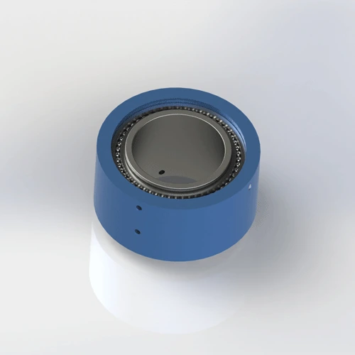

Heavy-duty 2-passage rotary joint for high-pressure pneumatic and fluid applications. PTFE composite seal, Aluminum Alloy 6061 body. Max 5 MPa, ?230 mm outer diameter. Ships in 7 days.
BP-2P-130-0001 is a heavy-duty dual-passage rotary joint designed for high-pressure pneumatic and hydraulic applications. The PTFE composite seal is rated for 5 MPa continuous duty with low friction torque at 80 RPM. The Aluminum Alloy 6061 body supports large machine tool applications while limiting rotating mass.
| Model Number | BP-2P-130-0001 |
|---|---|
| Number of Passages | 2-in-2-out (dual passage) |
| Mount Type | Flange Mount (8-M0 + 8-M10) |
| Max Pressure | 5 MPa (50 bar / 725 psi) — derate to 4 MPa for continuous hydraulic oil duty above 60 RPM |
| Max Speed | 80 RPM — derate to 50 RPM for continuous water or coolant at 5 MPa |
| Body Material | Aluminum Alloy 6061 |
| Seal Type | PTFE (Teflon) Composite Seal with FKM O-ring backup |
| Compatible Media | Air, Water, Water-Soluble Coolant, Light Hydraulic Oil (ISO VG 32 max) |
| Operating Temperature | -20°C to +80°C |
| Net Weight | Approx. 8.66 kg (8,655 g) |
| Certifications | ISO 9001:2015, CE, RoHS |
| Warranty | 12 Months |
Aluminum Alloy 6061 body: The formal engineering drawing specifies Aluminum Alloy 6061. The anodized surface supports corrosion resistance in water and coolant environments. Not recommended for abrasive coolant without additional protective coating.
PTFE composite seal at 5 MPa: Polytetrafluoroethylene with glass fiber and graphite filler, structurally reinforced for high-pressure duty. The composite maintains a low friction coefficient while resisting extrusion at 5 MPa. FKM O-ring provides static sealing at the housing interface. For continuous hydraulic oil above 4 MPa, inspect the seal at an interval appropriate to the duty cycle.
BP-2P-130-0001 is designed for high-pressure, low-speed applications where dual fluid channels are required on large machine tools and industrial equipment. This model may be suitable for the listed applications when its passage count, mounting, medium, pressure, speed, and temperature limits match the machine requirements.
Proper installation is critical at 5 MPa — a small error in flange bolt torque or filtration becomes a major leak within hours. The most common cause of early failure is overtightening flange bolts, which warps the AL6061 housing face and creates a leak path. Follow these steps for reliable high-pressure operation.
Confirm your equipment flange has 8×M0 and 8×M10 threaded holes on compatible bolt circles. The P.C.D. must match within 0.1 mm to prevent flange distortion under 5 MPa. Download the 2D drawing for exact P.C.D., hole depths, and tolerances. Custom bolt patterns are available with 10-day lead time. If your mating flange is cast iron or steel, check for burrs that could score the AL6061 face.
Secure the flange using 8×M0 and 8×M10 grade 8.8 screws with spring washers. Torque M10 to 12–15 N·m and M0 to 8–10 N·m in a star pattern to distribute load evenly. Overtightening warps the AL6061 flange face; undertightening allows leakage at 5 MPa. Check flange flatness with a feeler gauge — gap must be <0.05 mm. Apply a thin film of anti-seize compound on steel bolts into AL6061 threads to prevent galling.
BP-2P-130-0001 includes an anti-rotation tab on the stationary housing. Secure it to a fixed bracket with an M8 bolt torqued to 15–20 N·m. Never let the body rotate freely — the 8.66 kg mass creates destructive gyroscopic torque that will shear supply hoses and damage the flange. The anti-rotation bracket must have >5 mm clearance from rotating parts.
Use high-pressure flexible hoses (rated to 10 MPa minimum) to connect the stationary side. Rigid pipe transfers vibration and thermal expansion directly to the joint, stressing the seal. Install a 25-micron filter upstream — at 5 MPa, even 40-micron particles embed in the PTFE seal and create leak paths. For hydraulic oil, use a 10-micron absolute filter to protect the seal from metal debris.
Run at 0.2 MPa and 20–30 RPM for 10 minutes without load. This beds the PTFE seal against the shaft at low stress before the 5 MPa operating pressure. Check all four seal interfaces for leaks. Gradually increase pressure by 1 MPa every 5 minutes until reaching full operating pressure. Skipping the high-pressure run-in is the #1 cause of early seal failure — starting at 5 MPa immediately creates micro-scoring on the seal face.
Full dimensions, tolerances, thread specs, flange bolt pattern (8-M0 + 8-M10), P.C.D., shaft finish requirements, and seal groove details. 120 KB.
Free 3D files provided after inquiry. Includes the Aluminum Alloy 6061 body geometry, exact flange geometry, and port orientations. Use for CAD fit verification before ordering.
Complete guide: flange mounting, torque specs, anti-rotation, high-pressure filtration, run-in procedure, and maintenance checklist. 650 KB.
Aluminum Alloy 6061 material traceability and RoHS compliance documentation. Available upon request with order.
Not sure if BP-2P-130-0001 is the right model? Use this comparison to decide — and know exactly when to upgrade to a higher-pressure, higher-speed, or dust-proof joint.
| Your Requirement | BP-2P-130-0001 Fit | Better Alternative | Why Upgrade |
|---|---|---|---|
| Single air line, handheld tool, compact joint required | ❌ Overkill — 8.66 kg | BP-1P-0003 | 0.27 kg, single passage |
| Dual air lines, 1 MPa, general automation | ⚠️ Over-specified | BP-2P-0001 | Same passages, 1 MPa, lighter and lower cost |
| Dual lines, 5 MPa hydraulic, ≤80 RPM | ✅ Perfect | — | — |
| Pressure >5 MPa | ❌ Over pressure | Engineering review | Request a verified higher-pressure configuration |
| Speed >80 RPM at >2 MPa | ❌ Over speed | Custom high-speed hydraulic | PTFE seal not rated for high-speed high-pressure combo |
| Dusty or abrasive environment (steel mill, foundry) | ❌ No dust protection | BP-2P-50-0001 | Dust-proof seal and protective shroud |
| Food-grade or medical cleanroom | ❌ Standard seal not FDA | Custom FDA-grade | FDA 21 CFR 177.2600 compliant FKM or EPDM seal |
The #1 cause of BP-2P-130-0001 warranty claims is overtightening flange bolts. A technician torques M10 bolts to 25 N·m instead of the specified 12–15 N·m. The AL6061 flange face warps by 0.1 mm, creating a leak path that sprays hydraulic oil at 5 MPa within hours. The same happens with M0 bolts torqued beyond 8–10 N·m. Rule: Use a calibrated torque wrench. Tighten in a star pattern. M10: 12–15 N·m. M0: 8–10 N·m. Check flange flatness with a feeler gauge.
A machine builder needs 120 RPM on a hydraulic indexing table and assumes the 5 MPa rating covers all speeds. At 120 RPM and 5 MPa, centrifugal force lifts the PTFE seal lip from the shaft surface, causing immediate catastrophic leakage. The seal is designed for low-speed high-pressure — not high-speed high-pressure. Rule: Respect the 80 RPM limit at 5 MPa. If you need higher speed, contact Begapunk for a custom high-speed hydraulic seal design. The $200 savings on a standard joint costs $800 in downtime and cleanup.
A maintenance team installs BP-2P-130-0001 on a hydraulic press and immediately runs it at 5 MPa and 60 RPM. The PTFE seal has not bedded into the shaft surface — microscopic high spots create scoring under full pressure. Within 3 weeks, hydraulic oil leaks at 2 L/hour, contaminating the work area. The team replaces the seal, but the same thing happens because they skip the run-in every time. Rule: Run at 0.2 MPa and 20–30 RPM for 10 minutes, then increase by 1 MPa every 5 minutes. This extends seal life from 3 months to 8–10 months.
Other rotary joints commonly purchased with BP-2P-130-0001 — or the models you upgrade to when your application outgrows this pressure or speed range.
The formal engineering drawing specifies Aluminum Alloy 6061 as the body material for BP-2P-130-0001. For alternative materials, contact our engineering team for a separately verified configuration. All versions are manufactured under ISO 9001:2015 quality management and carry CE and RoHS certifications. Material certificates with full traceability are available upon request.
Yes — the PTFE composite seal and FKM O-ring are compatible with water, water-soluble coolant, and light hydraulic oil up to ISO VG 32. For continuous water duty at 5 MPa, derate speed to 50 RPM to reduce seal wear. The Aluminum Alloy 6061 body is anodized for corrosion resistance. For continuous water immersion or deionized water, request an engineering review of body material and surface treatment. Always use appropriate filtration for water duty.
BP-2P-130-0001 uses a dual-bolt-circle flange with 8×M0 and 8×M10 holes. Download the 2D PDF drawing for exact bolt circle diameters (P.C.D.), hole sizes, depths, and tolerances. Ensure your equipment mating flange matches within 0.1 mm flatness before ordering. Custom bolt patterns, including metric M8/M12 or imperial UNC configurations, are available with a 10-day lead time. The flange gasket material is included with every order. For high-vibration environments, specify lock washers or thread-locking compound.
Yes — free 3D STEP and IGES files are provided after you send an inquiry. The file includes the Aluminum Alloy 6061 body geometry, bolt hole patterns, and port orientations. Use the 3D file to verify clearance, P.C.D. alignment, and hose routing in your CAD assembly before ordering. 3D files may be provided for qualified projects after the application requirements are reviewed. File availability and response time depend on the model and the project information provided. Custom configuration file timing depends on the project review.
Request engineering review when the application exceeds the 5 MPa pressure limit or 80 RPM speed limit. Other triggers include the need for 3 or more independent channels, dusty or abrasive environments, different materials, or nonstandard mounting. Do not substitute BP-2P-95-0001 for higher pressure; its approved maximum is 1 MPa / 10 bar.
We design custom rotary joints for any number of passages, pressure, thread type, and mounting style. Free 3D STEP file with every inquiry. Typical custom lead time: 10–14 days.
Request Custom Design →Technical Note: All pressure ratings, speed ratings, and material specifications referenced on this page are based on Begapunk BP-series standard pneumatic rotary joints tested under controlled laboratory conditions. Actual performance depends on operating conditions, media quality, installation practices, and maintenance schedule. For applications outside standard ratings — including high-pressure hydraulic above 5 MPa, continuous water immersion, food-grade, or cleanroom environments — consult Begapunk factory engineering before specification. Last updated: June 11, 2026.